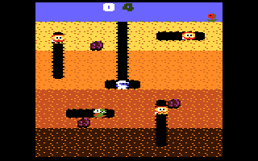
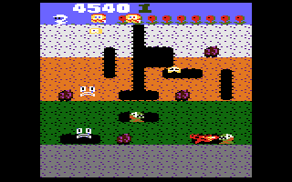

Description:
Dig Dug is a 1-2 player arcade game in which you have to use your shovel to dig your way through the earth.
Stopping you from doing this are two monsters, called Pooka and Fygar, who will continually chase you around.
The only weapon that you carry is an air pump, which you can use to inflate the monsters to the point where they explode.
(if you start to inflate them but stop doing so, the monsters will get turned back to their normal selves). Furthermore,
rocks are scattered throughout the earth, and you can use these rocks to squash them. If the monsters do not find you for
several seconds, they will eventually get turned into ghosts, which are able to walk through the earth. They are invincible
and cannot be killed. From time to time, vegetables will appear in the center, and you can get these for points.
Publishing Info:
Published by: Atari Inc.
Developed by: Namco Limited
Released: April, 1982
Game Info:
Genre: Action
Perspective: Side view
Visual: Fixed / flip-screen
Gameplay: Arcade
 "I really can't find a flaw with this game." - The Atari Times, Mar 18 2005